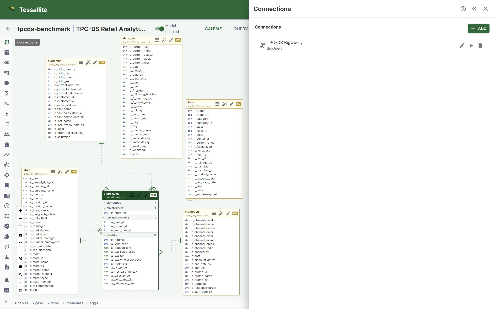
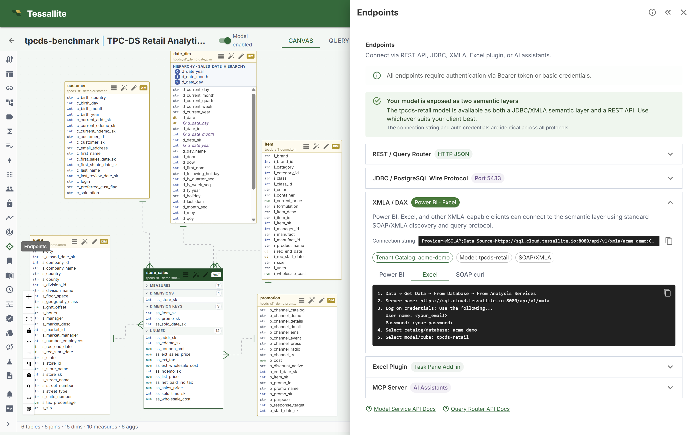
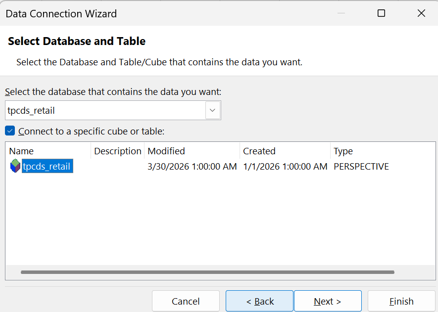
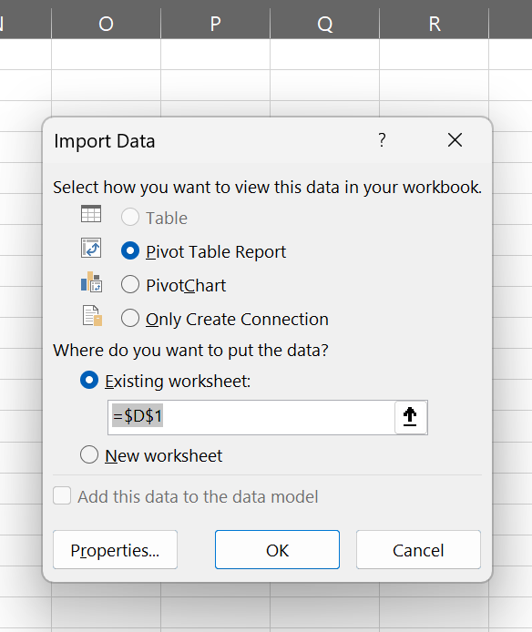
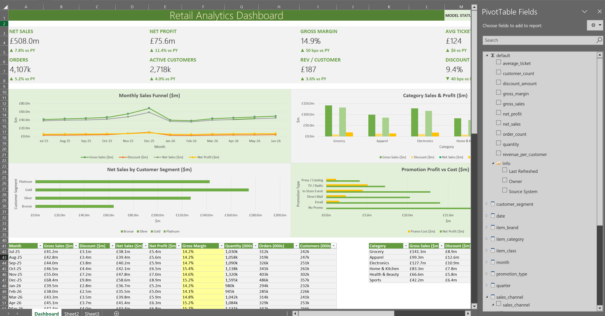

Step-by-step guide
Build a live dashboard in Excel.
We'll build the exact Retail Analytics dashboard you can download from the benchmark page — connected live to a Tessallite model, with KPI cards, charts, and clean formatting. No coding, no SQL. If you can drag a box and type a few words, you can do this. Plan about 30–45 minutes the first time.
1What you need before you start
Three things, and then your login:
- A published, active model. In Tessallite, open your project and make sure the Model enabled switch is green. That “turns on” the model so Excel can see it.
- A data source connected to it. The model needs to be plugged into where the real data lives (here it's BigQuery). You can see this in the Connections panel.
- Excel on your computer (Windows or Mac desktop). The live connection we use (called XMLA) needs desktop Excel — the browser version can't do it.
- Your Tessallite email and password (Excel will ask for them once).
Throughout this guide we use the example model TPC-DS Retail Analytics (the “SF1” size) —
the same model behind the public benchmark. Its cube is named tpcds_retail.

2Connect Excel to your model
First, get the connection details from Tessallite. Open your project and click the Endpoints panel, then open XMLA / DAX and pick the Excel tab. Tessallite shows you the exact steps and the address to use.

Now in Excel, follow these steps:
- Go to Data → Get Data → From Database → From Analysis Services.
- Server name: paste the XMLA address from the Endpoints panel
(for the demo it is
https://sql.cloud.tessallite.io:8080/api/v1/xmla/<your-tenant>). Click Next. - Log on credentials: choose “Use the following user name and password”, then type your Tessallite email and password. Click Next.
- Select the database (catalog): pick your tenant (the demo is
acme-demo). - Select the cube: tick Connect to a specific cube and choose
tpcds_retail. Click Next, then Finish.

tpcds_retail.Excel then asks how to drop the data in. Choose PivotTable Report and click OK.

You're connected. On the right you'll see the PivotTable Fields list — this is the model's menu.
net_sales, orders, quantity. The folders below (like
month, item_category, quarter) are dimensions — the ways to slice those numbers.
★The layout map & exact cell ranges
Before building, here is the finished dashboard as a map. Columns run A–P. Build each block to the ranges shown and your workbook will match the download exactly. Keep this picture beside you for the rest of the guide.
Dashboard sheet — what goes where
Eight KPI cards in two rows (rows 3–4 and 6–7), then a 2×2 grid of charts (rows 10–36).
Data sheet — the four PivotTables, side by side
Title in A1, a label over each block in row 3. The dashboard's charts read these pivots via GETPIVOTDATA.
Every range in one place
| Block | Cell / range (Dashboard sheet) |
|---|---|
| Title | A1 (merged across A1:L1) |
| KPI cards — row 1 | A4, E4, I4, M4 (labels in row 3) |
| KPI cards — row 2 | A7, E7, I7, M7 (labels in row 6) |
| Chart — Monthly | A10:H23 |
| Chart — Category | H10:P23 |
| Chart — Quarter | A23:H36 |
| Chart — Product Class | H23:P36 |
| Backing table — Monthly | A41:I53 (months in rows 42–53) |
| Backing table — Category | K41:T47 |
| Backing table — Quarter | K56:Q60 |
| Backing table — Product Class | A64:H70 (chart block R64:T70) |
| Model-map legend | K64:P70 |
| PivotTables (Data sheet) | Data!B4 · Data!F4 · Data!J4 · Data!N4 |
3Build the data tables (PivotTables)
A dashboard is just a few small tables turned into charts. We'll make one small PivotTable per slice on a single helper sheet (call it Data). Each one is a single, fast question to the model.
For your first table — sales by month:
- Click inside the PivotTable. In the field list, drag month into the Rows box.
- Drag net_sales into the Values box, then drag gross_sales in too.
That's it — you now have 12 months with two numbers each, pulled live from the model. Repeat for the other slices (each is a brand-new PivotTable: Insert → PivotTable → From this workbook's connection):
| Table | Drag to Rows | Drag to Values |
|---|---|---|
| By month | month | net_sales, gross_sales |
| By category | item_category | net_sales, gross_sales |
| By quarter | quarter | net_sales, gross_sales |
| By product class | item_class | net_sales, gross_sales |
Line them up side by side on the Data sheet and write a small label over each (“By Month”, “By Category”, and so on) so the sheet looks tidy, not like leftovers.
4Build the KPI cards (the big numbers)
The big headline numbers at the top (Net Sales, Orders, Customers…) are single values. For those we use a small formula called CUBEVALUE — it asks the model for exactly one number.
First, find your connection's name: Data → Queries & Connections. Say it's tpcds_retail.
Then a KPI cell looks like this (the /1000000 just turns pounds into millions so it reads “£4.7” not a huge number):
Here are the eight cards and their formulas (swap in your connection name):
| Card | Formula |
|---|---|
| Net Sales | =CUBEVALUE("tpcds_retail","[Measures].[net_sales]")/1000000 |
| Gross Sales | =CUBEVALUE("tpcds_retail","[Measures].[gross_sales]")/1000000 |
| Units Sold | =CUBEVALUE("tpcds_retail","[Measures].[quantity]")/1000000 |
| Avg Ticket | =CUBEVALUE("tpcds_retail","[Measures].[average_ticket]") |
| Orders | =CUBEVALUE("tpcds_retail","[Measures].[order_count]")/1000 |
| Active Customers | =CUBEVALUE("tpcds_retail","[Measures].[customer_count]")/1000 |
| Rev / Customer | =CUBEVALUE("tpcds_retail","[Measures].[revenue_per_customer]") |
| Discount Rate | =CUBEVALUE("tpcds_retail","[Measures].[discount_amount]")/CUBEVALUE("tpcds_retail","[Measures].[gross_sales]") |
5Add the charts
Charts come straight from the little tables you built in Step 3.
- Click your By Month table, then Insert → Chart and pick a Line or Column chart.
- Do the same for the others: By Category → column, By Product Class → bar, By Quarter → column.
- Give each chart a clear title (“Monthly Sales”, “Category Sales”, …).
GETPIVOTDATA (Excel writes this for you
if you click a pivot cell with =). Then chart those cells. That's how the downloadable file is built —
a tidy dashboard up front, the pivots tucked on the Data sheet.6Lay out and format the dashboard
This is what turns a few tables into something you'd proudly send. Take your time here.
KPI cards
- Put the eight numbers in a row of “cards” at the top. Merge a couple of cells for each, add a soft background colour, a small grey label above, and a big bold number below.
- Set the number look with Format Cells → Custom:
Looks like Custom format code £4.7bn "£"0.0,"bn"£508.0m "£"0.0"m"138.9M (units) #,##0.0"M"240k #,##0"k"9.4% 0.0%£187 "£"0
Charts & colours
- Arrange the charts in a neat 2×2 grid under the cards.
- Use one or two brand colours (a green and a soft grey work well), remove busy gridlines, and keep titles short.
- View → uncheck Gridlines on the dashboard sheet for a clean, print-ready look.
Tidy the Data sheet
- Keep all the PivotTables together on the Data sheet with a title row (“Live model data — do not edit”) and a label over each block.
- If you don't want viewers poking at it, right-click the sheet tab → Hide.
7Save and refresh
- Save as a normal
.xlsx— no macros needed. - To pull fresh numbers any time: Data → Refresh All.
- Refreshing talks to the live model, so it needs the connection and your credentials. If you send the file to someone without a Tessallite login, it still opens and shows the last saved numbers — they just can't refresh.
Tip: open the finished workbook and click around — seeing the pieces in place makes every step above click into focus.
8If something goes wrong
- Refresh spins forever. Turn off background refresh: Data → Queries & Connections → right-click the connection → Properties → untick Enable background refresh. Then refresh again.
- Cells show #N/A. The connection isn't live or a name is mis-typed. Re-check the measure name in the field list, and make sure you can connect (Step 2).
- “Can't find the cube.” The model probably isn't enabled, or you picked the wrong catalog. Go back to Step 1 and check the green Model enabled switch.
- It asks for a password every time. That's normal for a live file — the password isn't saved inside the file for safety.